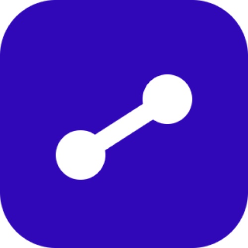
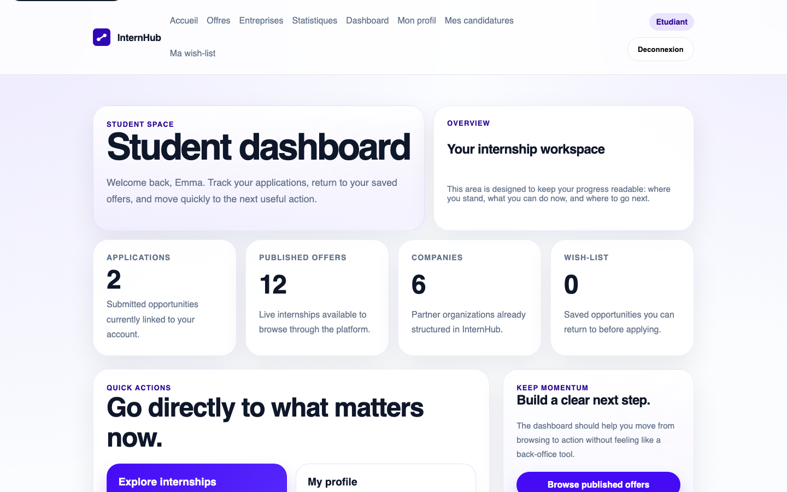
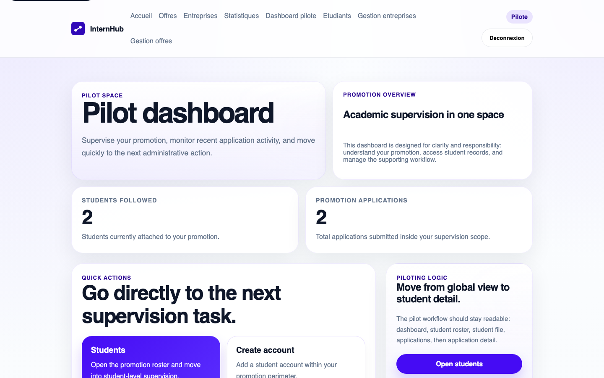
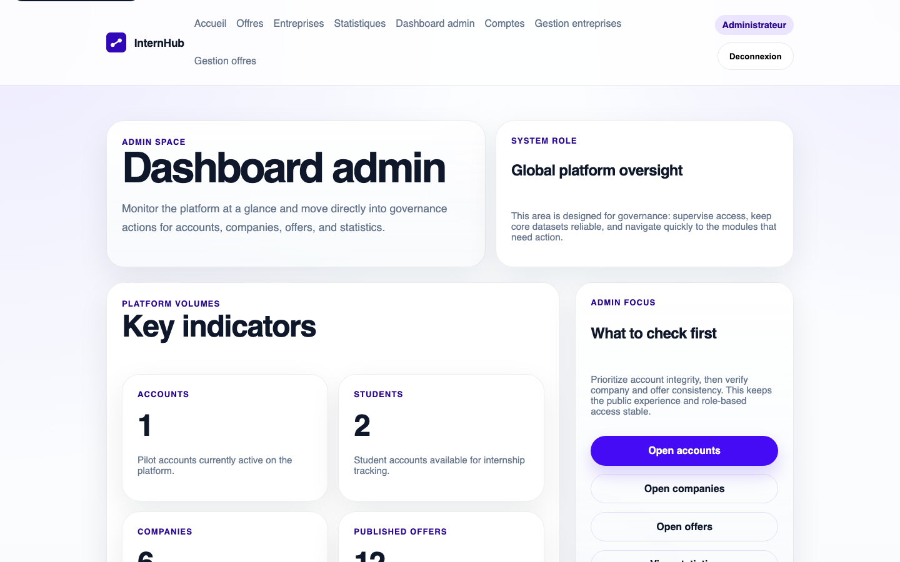

Scattered information
Offers, companies, and application data are often split between multiple files, emails, or disconnected tools.

InternHubInternship management platform that centralizes offers, companies, applications, and role-based follow-up.
Students, coordinators, and institutions often work across scattered tools, weak follow-up loops, and inconsistent internship records.
Offers, companies, and application data are often split between multiple files, emails, or disconnected tools.
Students and coordinators struggle to keep a shared view of application progress and academic supervision.
Without one platform, offers, companies, and application states become harder to manage reliably.
InternHub answers this coordination problem with one structured platform and clearly separated roles.
InternHub is structured around four actors, each with a clear access perimeter and a specific operational purpose.
This role model is not cosmetic: it structures navigation, permissions, dashboards, and the end-to-end workflow.
InternHub covers the full internship journey, from public consultation to student action, pilot supervision, and administrative governance.
Public users can browse internship offers, explore company profiles, consult platform statistics, and understand the product before signing in.
Students can explore offers, submit applications with supporting documents, manage a wish-list, and follow their own application history.
Pilots supervise their promotion, review student applications, manage scoped data, and support the internship follow-up process.
Administrators manage accounts, companies, offers, and global platform coherence across all roles and workflows.
This scope is what makes the application demonstrable end to end, not just screen by screen.
The platform is easiest to understand through its main operational paths: public consultation, student action, and supervised management.
Public users browse offers, compare companies, and access platform statistics before any authenticated action.
Students save opportunities, submit applications with supporting documents, and follow their own candidatures from the dashboard.
Pilots and administrators manage data, supervise students, and maintain the platform through separated permissions and scoped actions.
These are the same flows that structure the live demo, which is why they matter before the technical slides.
The application is server-rendered and organized with a plain PHP MVC structure, where each layer has a clear responsibility.
Requests enter through one application entry point, then the router dispatches them to the correct controller action.
Controllers orchestrate the workflow while middleware enforces authentication, role access, and request-level constraints.
HTML is rendered on the server through PHP views, which keeps the interface aligned with the backend state and permissions.
Repositories centralize SQL access through PDO, keeping queries out of controllers and preserving a cleaner MVC separation.
The persistence layer stores users, companies, offers, applications, and supporting workflow data in a relational SQL database.
The project security model is built around explicit role permissions, protected requests, and scoped access to sensitive files and data.
Permissions are driven by the role model and enforced through route-level middleware, so users only reach pages that belong to their perimeter.
Authenticated actions rely on protected sessions, login state control, and CSRF protection on sensitive forms such as account or application operations.
Application records and CV downloads are restricted to the right student, pilot scope, or administrator context, instead of being publicly exposed.
This is why the platform security model does not depend on hiding buttons. It depends on server-side control and scoped access rules.
The interface work was organized as a mobile-first system, with each family receiving its own hierarchy, navigation logic, and visual treatment.
Offers, companies, and statistics in one public-facing experience.

Dashboard, applications, profile, and wish-list centered on student action.

Roster, follow-up, and student supervision for academic coordination.

Governance, accounts, and global management in a sober operational UI.
Shared CRUD pages and support states complete the system, but these four families carry the main product experience.
Implementation alone was not enough. The delivery also includes automated checks, repeatable demo preparation, and controlled fallback behavior.
PHPUnit covers key application behavior beyond manual navigation.
Phase-level smoke scripts validate the main public, student, pilot, admin, and support flows.
The demo dataset and accounts can be restored before presentation to reduce live-demo risk.
403, 404, and 500 states are explicitly handled, making the application more stable in edge cases.
The result is a project that is not only functional, but also reproducible and controlled under presentation conditions.
The demo is intentionally ordered from open consultation to authenticated action, supervision, and governance, so the audience never loses the product thread.
Home, offers, companies, and statistics.
Login, dashboard, applications, and profile.
Dashboard, student roster, follow-up, and supervision pages.
Dashboard, accounts, and global management interfaces.
Presenting the demo in this order keeps the story clear: discover, act, supervise, then govern.
The project brings together clear role separation, complete user journeys, and verified behavior in one defendable plain PHP MVC application.
The application supports the internship journey from consultation to application, supervision, and governance.
Permissions, dashboards, and navigation remain aligned with the operational logic of each actor.
Tests, smoke verification, resettable demo data, and controlled error states make the project ready to present.
Thank you. We can now move to the live demo or open the discussion.